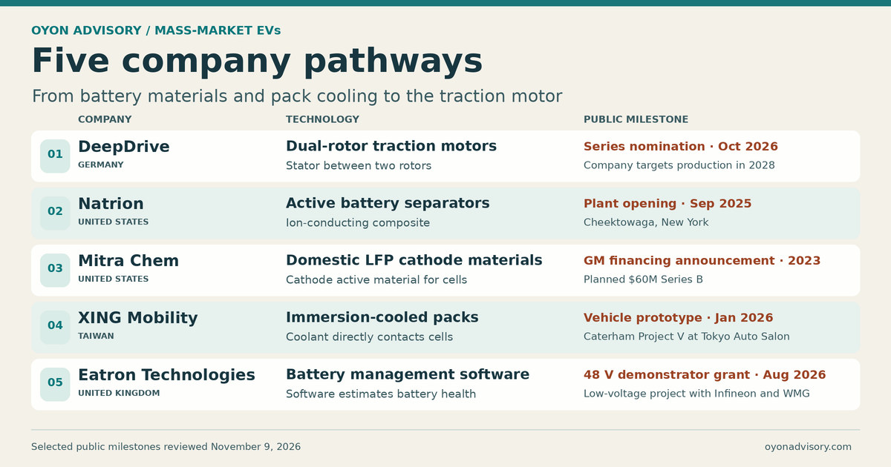

Back to Research & Perspectives
Mass-Market EVs — Five Company Pathways
The average battery pack price for a battery-electric vehicle fell to $99/kWh in 2025, according to BloombergNEF. That gives new technologies a moving target. A better separator, cooling system, or motor has to earn its place in a vehicle whose incumbent components are already getting cheaper. Five companies illustrate where that can happen, from the chemistry inside a cell to the motor that drives the wheels. [1] [2]


Where the technologies fit
Lithium iron phosphate (LFP) is the cost benchmark for many mass-market EVs. Inside the pack, a liquid cold plate removes heat during charging and driving, while barriers between cells slow the spread of heat if a cell fails. Battery management software sets operating limits as the cells age. Downstream, the inverter and traction motor determine how efficiently stored energy reaches the wheels. Each layer has its own test, from cost per usable kilowatt-hour to charging time, pack safety, and efficiency over a driving cycle. [2] [3] [4] [5] [7]
Five companies and their milestones
1. DeepDrive · Germany · Dual-rotor traction motors
DeepDrive places the stator between an inner and an outer rotor to improve torque density. In October 2026, it announced a large-series nomination from an unnamed automaker, with production targeted for 2028. BMW had separately announced an earlier road-test program. The nomination moves the design toward series production, where manufacturing yield and efficiency over real driving cycles will matter. [6] [7]
2. Natrion · United States · Active battery separators
Natrion makes a separator incorporating an ion-conducting composite. It opened a manufacturing site in Cheektowaga, New York, in September 2025. The next step for passenger EVs is to show how the separator performs against conventional coated films on cell safety, production yield, and cost across automotive production lots. [8] [9]
3. Mitra Chem · United States · Domestic LFP cathode materials
Mitra Chem develops and manufactures LFP cathode active material. GM announced in 2023 that it would lead a planned $60 million Series B. The commercial question is whether a domestic supplier can meet cell makers’ specifications consistently at a cost that competes with established LFP supply. [10] [11]
4. XING Mobility · Taiwan · Immersion-cooled battery packs
XING cools cells by bringing fluid into direct contact with them. Caterham unveiled its latest Project V prototype with XING’s immersion-cooled cell-to-pack system at the 2026 Tokyo Auto Salon. The sports-car prototype shows how the system fits into a vehicle. A mass-market program would put greater weight on pack cost, fluid durability, and repair. [12] [13]
5. Eatron Technologies · United Kingdom · Battery management software
Eatron develops software that estimates battery health and helps set operating limits as cells age. In August 2026, it announced UK funding for a 48 V demonstrator with Infineon and the University of Warwick. The project targets lower-voltage applications. For passenger EV traction packs, the evidence to watch is whether similar controls improve usable battery life under real driving and charging conditions. [5] [14]
What these milestones tell us
A vehicle prototype shows that a component can fit and function in a particular design. A series nomination signals that an automaker intends to use it. A factory opening shows that a supplier has put manufacturing capacity in place. For mass-market EVs, the decisive evidence comes when those steps translate into repeat shipments at the vehicle’s target cost and warranty requirements.
Selected public sources
- BloombergNEF — 2025 lithium-ion battery price survey
- IEA — Global EV Outlook 2026, electric vehicle batteries
- Henkel — EV battery gap filler and thermally conductive adhesive
- Aspen Aerogels — 2025 Form 10-K and thermal barrier business
- Eatron and WMG — Battery health algorithms
- DeepDrive — Large-series supplier nomination and 2028 production target
- BMW — Road-test program for DeepDrive’s electric drive
- Natrion — Cheektowaga manufacturing site opening
- Empire State Development — Natrion’s active separator and expansion
- General Motors — Mitra Chem Series B announcement
- Mitra Chem — LFP cathode active material
- Caterham — XING Mobility immersion-cooled battery partnership
- Caterham — Project V prototype at Tokyo Auto Salon 2026
- Eatron — DRIVE35 funding for a 48 V demonstrator